| nT | nC | reject |
|---|---|---|
| 2 | 2 | 19 |
| 2 | 4 | 16 |
| 2 | 10 | 20 |
| 2 | 50 | 26 |
| 2 | 500 | 31 |
| 10 | 2 | 18 |
| 10 | 4 | 9 |
| 10 | 10 | 7 |
| 10 | 50 | 7 |
| 10 | 500 | 8 |
| 500 | 2 | 29 |
| 500 | 4 | 14 |
| 500 | 10 | 8 |
| 500 | 50 | 5 |
| 500 | 500 | 5 |
12 Exploring and presenting simulation results
Once we have performance measures for each method examined for each scenario of our study’s design, the computationally challenging parts of a simulation study are complete, but several intellectually challenging tasks remain. The goal of a simulation study is to provide evidence to address a research question or questions, but performance measures (like numbers more generally) do not analyze themselves. Rather, they require interpretation, analysis, and communication in order to identify findings—that is, broad, potentially generalizable patterns of results—that are responsive the research questions. Good analysis aims to provide a clear understanding of how one or more of the simulation factors influence key performance measures of interest, the circumstances where a data analysis method works well or breaks down, and—in simulations that examine multiple methods—the conditions where one method performs better or worse than the alternatives.
In multi-factor simulations, the major challenge in analyzing simulation results is dealing with the multiplicity and dimensional nature of the results. For instance, in our cluster RCT simulation, we examined 270 different simulation scenarios, which vary along several factors. For each scenario, we calculated a whole suite of performance measures (bias, SE, RMSE, coverage, …), and we have these performance measures for each of the three estimation methods under consideration. We organized all these results as a data table with 810 rows (three rows per simulation scenario, with each row corresponding to a specific method) and one column per performance metric.
Navigating all of this can feel somewhat overwhelming. How do we understand trends in this complex, multi-factor data structure? Broadly, the answer is to think of the performance measures as outcomes of a designed experiment, so that we can bring to bear any and all of the data analysis techniques relevant to analyzing experimental designs involving real data.
In this chapter, we survey three main categories of analytic tools that can be used for exploring and presenting simulation results:
- Tabulation
- Visualization
- Modeling
For each category of tools, we describe the logic behind how it can be applied, provide high-level examples drawn from the literature and our own work, and discuss its strengths and limitations.
In this and subsequent chapters, we assume that you will be sharing the findings from your simulations with an audience beyond yourself. Depending on your circumstances, that might be a broad audience of researchers and data analysts, with whom you will communicate through a scholarly article in a peer-reviewed methodology journal; it might be colleagues who are evaluating your proposal for an empirical study, where the simulations serve to justify the data analysis protocol; it might be a small group of collaborators, who will use the simulations to make decisions about how to design a study; or it might be fellow students of statistics, interested to read a blog post that discusses how a particular model or method works. These contexts differ in the format and level of formality used to communicate findings. Still, in any of these contexts, you will probably need to create a written explanation of your findings, which summarizes what you found and presents evidence to support your assertions and interpretations. We close this chapter with a discussion about creating such write-ups and distilling your analysis into a set of exhibits for presentation.
12.1 Tabulation
Simulation study results are often presented in tables. A table might be fine if it involves only a few numbers and a few targeted comparisons or if it is important to report exact values for some quantities. However, simulations usually produce lots of numbers and require making many comparisons. For example, you might need to show the relative performance of several alternative estimators or the performance of your estimators under different conditions for the data-generating model. This usually means a lot of rows and a lot of dimensions. Tables can do two dimensions; when you try to cram more than that into a table, neither you nor your audience will be particularly well served. Furthermore, in simulation, exact values of performance measures are not usually of interest—in fact, we rarely have them due to Monte Carlo simulation error. Because of this, tables risk providing a false sense of uncertainty—unless you also report MCSEs, which would create further clutter. In general, we believe tables rarely make the take-aways of a simulation readily apparent. As a rule of thumb, if you are ever tempted into putting your table in landscape mode to get it to fit on the page, think again. It is usually more useful and insightful to present results in graphs (Gelman et al. 2002).
To illustrate, consider the following table of simulation results showing the false rejection rate, against an \(\alpha\) of \(0.10\), for an estimator of an average treatment impact. We have two factors of interest, the treatment and control group sizes.
This is the classic table you might see in a paper: the table is structured as groups of results indexed by one factor, with a second factor that varies within each group. The table makes clear that the rejection rates are often well above 10% and that the rates are all far too high when there are few treatment units. Because of the ordering of rows, it is somewhat more difficult to see how the number of control units impacts the rate, and understanding the joint relationship between number of treatment and number of control requires extra thinking.
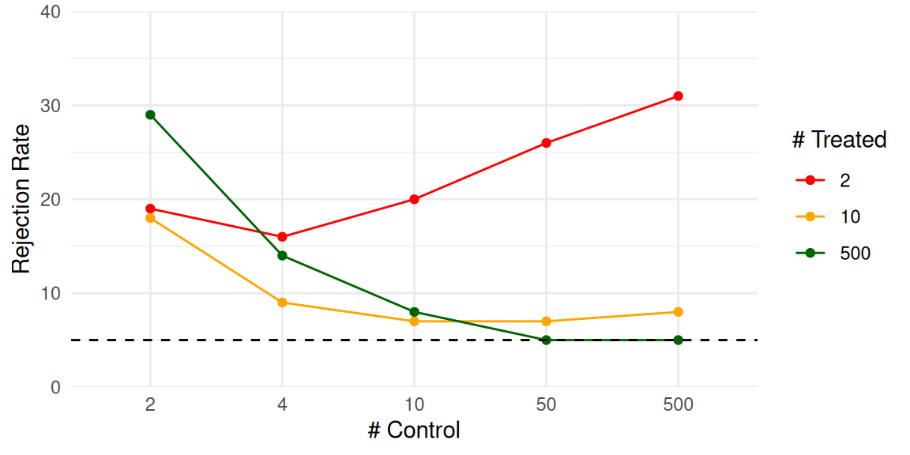
By contrast, a plot of these exact same numbers can make trends much clearer. Figure 12.1 is an “interaction plot” showing the “interaction” of the factors nT and nC. This plot makes apparent that we only achieve something close to a valid test if both nC and nT are above 50. Even if nC is 500, the rejection rate is elevated if nT is only 10. When nT is 2, then increasing nC actually increases the rejection rate, meaning that larger samples make things worse. None of these trends were obvious from looking at the raw table results.
12.1.1 Estimators of treatment variation
Tables do serve some purposes. In general, tables are more useful for displaying high-level summaries of findings, such as average performance across a range of simulated scenarios, rather than for reporting raw results. For example, in ongoing work, Miratrix has been studying the performance of a suite of estimators designed to estimate individual treatment effects. To test which estimators perform better or worse than the others, we designed a series of scenarios where we varied the data-generating model by a variety of factors. For each scenario, we calculated the performance of each estimator relative to the median of all estimators considered. We can then ask, do some methods perform better than their peers on average across all scenarios considered?
| model | bias | se | rmse | sd_bias | sd_se | sd_rmse | R2 | sd_R2 |
|---|---|---|---|---|---|---|---|---|
| BART S | -6 | -28 | -17 | 13 | 14 | 12 | 0.40 | 0.25 |
| CF | -10 | -2 | -10 | 14 | 34 | 11 | 0.35 | 0.19 |
| CF LC | -10 | -1 | -10 | 14 | 33 | 10 | 0.34 | 0.19 |
| LASSO R | 2 | -21 | -10 | 9 | 13 | 10 | 0.31 | 0.25 |
| LASSO MCM EA | 2 | -20 | -10 | 9 | 13 | 10 | 0.31 | 0.25 |
| LASSO MOM DR | 2 | -21 | -9 | 9 | 13 | 10 | 0.31 | 0.25 |
| RF MOM DR | 3 | -12 | -8 | 15 | 16 | 8 | 0.31 | 0.20 |
| LASSO T | -1 | -10 | -6 | 16 | 23 | 9 | 0.32 | 0.23 |
| LASSO T INT | -4 | 19 | 5 | 16 | 55 | 17 | 0.28 | 0.20 |
| LASSO MCM | 20 | 4 | 8 | 20 | 10 | 8 | 0.14 | 0.15 |
| LASSO MOM IPW | 20 | 4 | 8 | 20 | 10 | 8 | 0.14 | 0.15 |
| ATE | 47 | -60 | 9 | 48 | 7 | 17 | NA | NA |
| RF T | -22 | 60 | 11 | 17 | 48 | 19 | 0.29 | 0.13 |
| RF MOM IPW | 15 | 27 | 12 | 31 | 20 | 13 | 0.16 | 0.12 |
| OLS S | -26 | 87 | 23 | 28 | 83 | 34 | 0.31 | 0.22 |
| BART T | -38 | 103 | 25 | 19 | 54 | 22 | 0.32 | 0.18 |
| CDML | 9 | 71 | 31 | 20 | 99 | 46 | 0.24 | 0.20 |
Table 12.1 gives an answer to this question: we evaluate each method along four metrics: relative bias, relative se, relative rmse, and \(R^2\). To easily see which is good and which is bad, we averaged the performance measures across all scenarios and order the methods from highest average relative RMSE to lowest. Each cell of the table summarizes across 324 scenarios. The first several columns show relative performance. To calculate these values, for each method \(m\), performance metric \(Q\), and scenario \(s\), we calculated \(P_{ms} = Q_{ms} / median( Q_{ms} )\), and then averaged the \(P_{ms}\) across the scenarios to get \(\bar{P}_m\). Each method also has an \(R^2_{ms}\) value for each scenario; we simply take the average of these across all scenarios for the penultimate column. The standard deviation columns show the variation in performance across the full set of scenarios, providing some indication of how much the relative performance of a method changes from scenario to scenario. Representing this variation more explicitly might be better done with a visualization, as we explore shortly.
Overall, the table provides a nice, high-level summary of the results. It reports no less than four performance measures, one of which (the \(R^2\)) is on a different scale than the others; this is hard to do in a single visualiztion. Despite these strengths, we still do not feel that the tables makes the results particularly visceral. A visualization can make trends jump out much more clearly.
12.1.2 Missing data and causal inference
For another example, Zhou et al. (2015) examined the performance of a variety of methods for estimating causal effects in the presence of missing data. They present their simulation results in a series of tables. Their Table 2, for example, had four quadrants, each a distinct scenario. For example, the results for the scenario with misspecified outcome models and propensity score models looked like this:
| method | bias | sd | rmse | mae |
|---|---|---|---|---|
| Naive | -10.00 | 1.56 | 10.12 | 9.97 |
| RG | -0.77 | 1.50 | 1.69 | 1.12 |
| IPW | 4.63 | 10.38 | 11.37 | 2.41 |
| Stratified | -2.85 | 1.41 | 3.18 | 2.87 |
| AIPW | -7.93 | 12.55 | 14.84 | 5.02 |
| AIPW-S | -1.53 | 1.42 | 2.08 | 1.59 |
| AIPW-S1 | -1.58 | 1.42 | 2.12 | 1.61 |
| AIPW-S1m | -1.59 | 1.42 | 2.13 | 1.63 |
| WR | -2.93 | 1.48 | 3.29 | 2.91 |
| WR-S | -1.53 | 1.36 | 2.04 | 1.56 |
| WR-S1 | -1.58 | 1.36 | 2.09 | 1.59 |
| WR-S1m | -1.59 | 1.36 | 2.09 | 1.61 |
| TML | -37.60 | 332.08 | 334.03 | 4.62 |
| TML-S | -1.53 | 1.42 | 2.08 | 1.59 |
| TML-S1 | -1.58 | 1.42 | 2.13 | 1.61 |
| TML-S1m | -1.58 | 1.42 | 2.13 | 1.62 |
Reading the table involves scanning across many methods, some of which are variants of the same core type. And this is only a quarter of the data—there are three other scenarios with results like these on the same table!
The table does provide all the information, but instead we can use a visualization. For our visualization we group methods by main type, and truncate outliers to put more focus on central tendencies. Below we plot the full Table 2 in this way, as one example. Our table corresponds to the second row in the plot; the other rows are the tables not shown (but see the paper itself). The outliers are circled to make their truncation clear.
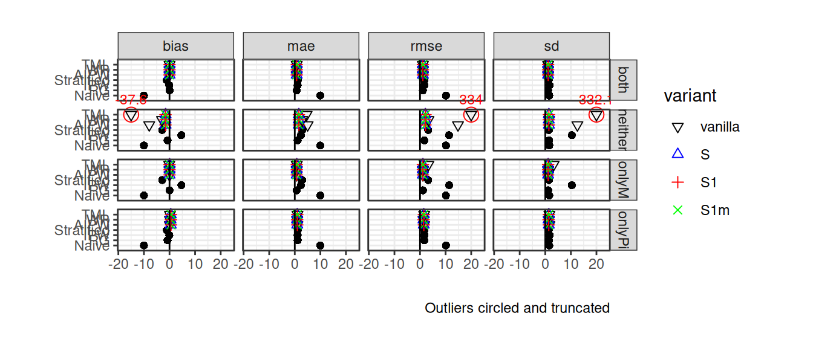
Our plot makes the overall story more clear: the variants within method are generally the same, except for the TML estimator under the “neither” scenario. Many of the estimators have very similar performances to each other across the scenarios considered, but IPW approaches can be biased and more unstable.
12.2 Visualization
We see visualization as the primary technique for communicating simulation results. To illustrate some illustration principles, we next present a series of visualizations drawn from published simulations, each of which highlights some visualization design principles that we believe are broadly relevant and useful. In Chapter 13, we present a more detailed look at the process of developing a polished visualization through iterative refinement of a series of plots.
12.2.1 Relative performance of treatment effect estimators
In Section 12.1.1, we used a table to summarize the performance of a range of different methods of assessing individual-level variation in treatment effects. The table provided a compact high-level summary, but it could be improved by turning it into a visualization.
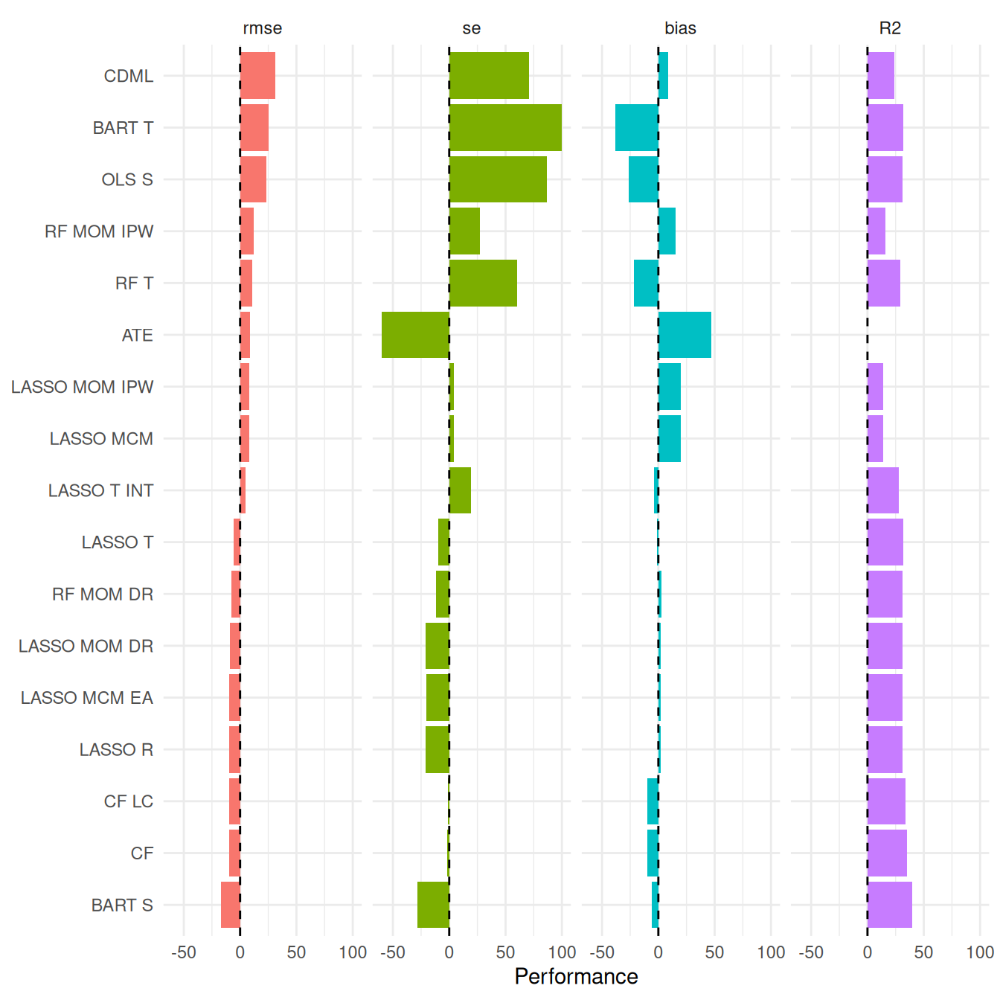
As a starting point, Figure 12.2 shows the same data as reported in the table, with the values of each performance measure depicted as bars (after rescaling R2 by 100 to put it on a similar scale to the other measures). The Figure makes it easier to visually assess the extent to which the estimators follow consistent patterns in across the performance measures. However, this plot does not have any representation of the degree of variation across scenarios because the bars only represent the average performance across scenarios. We can elaborate this plot by using boxplots that summarize the distribution of performance measures across all scenarios examined.
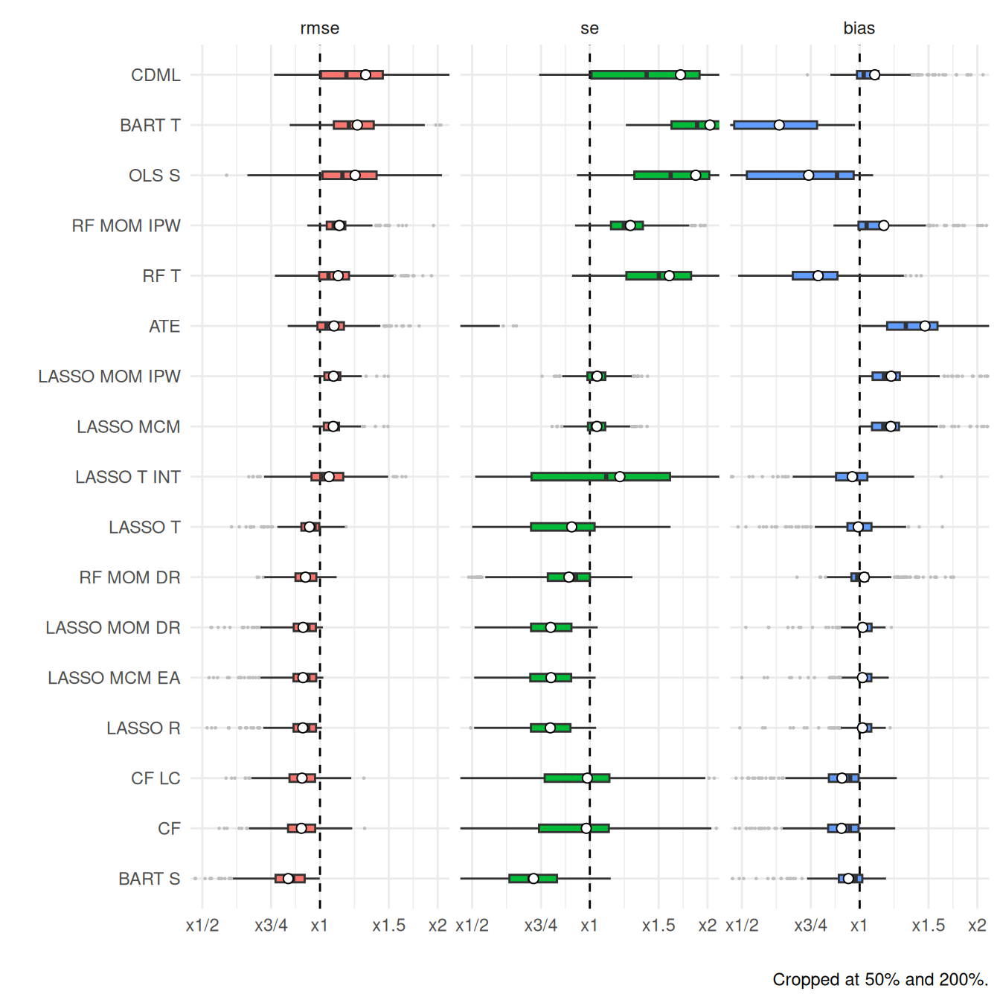
The simulation evaluated performance across 324 distinct scenarios, and Figure 12.3 shows the range of relative performances for each estimator across all of them. Using boxplots instead of bars highlights how much the relative performance can change from scenario to scenario. Just as in Table 12.1 and Figure 12.2, we order the methods from highest average RMSE to lowest. We use little circles to represent the average performance across all the simulations as little circles (these would correspond to the bars in Figure 12.2). We truncate extreme values to make the plot more readable and bring focus to central tendencies. The x-axis is on a log scale, selected to navigate long tails and highlight relative performances. The log scaling also makes the scale of improved performance (less than x1) similar to worse performance (above x1).
Figure 12.3 depicts three different performance measures in a single plot. We dropped \(R^2\) for this plot because the \(R^2\) measure was in percentage points, and, due to estimation uncertainty, included negative values; this was not compatible with the log scaling.1 We have lost something in order to gain something. Ultimately, which plot is best is a matter of aesthetic judgement. Pick your plot based on whether it is clearly communicating the message you are trying to get across.
12.2.2 Bias of log response ratios with auto-correlated data
Chen and Pustejovsky (2024) examined the performance of a variety of effect size estimators used for quantifying treatment effects in single-case designs (SCDs), which are repeated measures designs that involve measuring an outcome variable on a single individual both before and after the introduction of a treatment. Typical SCDs involve quite short time series with closely spaced repeated measurements, so there is concern about whether auto-correlation in the outcome measurements affects estimation of effect sizes. Chen and Pustejovsky (2024) reported some small simulations that examined the bias of different effect size estimators, including the log response ratio, under a data-generating process involving Poisson-distributed outcomes with a first-order auto-regression structure.
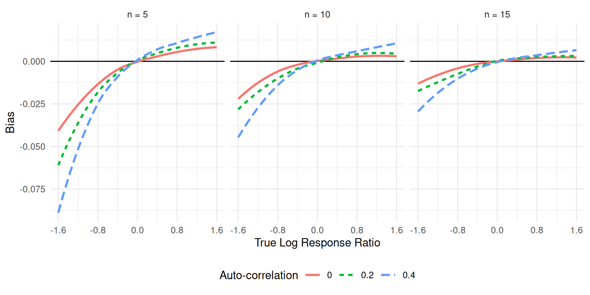
One of the most common visualizations of simulation results is simply a line chart showing how a performance metric changes in response to some factor of interest.2 Following the same construction as Figure 1 of Chen and Pustejovsky (2024), Figure 12.4 uses a simple line chart to depict how bias of the LRR1 effect size estimator is affected by the magnitude of the underlying parameter (on the horizontal axis) and the degree of auto-correlation, with varying levels of auto-correlation represented with different colors and different styles of line. We use multiple plots of a similar form to represent patterns across different numbers of data series lengths, from \(n = 5\) to \(n = 15\) measurements per phase. Figures such as Figure 12.4 clearly show how the bias is affected by the degree of auto-correlation, with larger positive auto-correlation amplifying the bias of the estimator. We also see that the bias is dampened as the series length increases.
12.2.3 Biserial correlation estimation
An extreme groups design is a clever way to evaluate the association between two variables when one of the variables is difficult or expensive to measure. It involves measuring one variable, \(X\), on a sample of participants but measuring the other variable, \(Y\), only for the subset of participants who have \(X\) scores in the highest or lowest part of the distribution. The highest and lowest groups are defined based on some cut-off percentiles, which might be based on either the sample distribution or the population distribution of \(X\). The correlation between \(X\) and \(Y\) can be recovered by computing the biserial correlation coefficient between \(Y\) and an indicator for whether the participant is in the highest or lowest part of the distribution.
Pustejovsky (2014) used simulation to examine the bias of biserial correlation estimates under the extreme groups design. This simulation was a full factorial design with four manipulated factors, including the true correlation for a range of values, cut-off type, cut-off percentile, and sample size. Figure 12.5 reproduces a visualization of the bias of the biserial correlation estimator examined in Pustejovsky (2014). The correlation parameter, with 96 levels, runs along the horizontal axis and shows a smoothly varying bias curve. We use line type to represent the sample size, which makes it apparent that the bias shrinks as sample size increases. Finally, facetted plots are used to represent the remaining factors of cut-off type and cut-off percentile. All of the factors—and thousands of distinct simulation scenarios—are visible in a single plot.
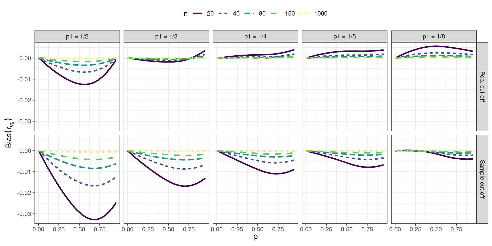
To make Figure 12.5, we smoothed the lines with respect to the correlation parameter \((\rho)\) using locally weighted linear regressions (i.e., LOESS smoothing). Smoothing is a nice tool for taking some of the Monte Carlo error out of a figure to more directly represent overall trends.
This style of visualization, consisting of a grid of small plots, is called “many small multiples” and is beloved by Edward Tufte, who has written extensively on best practices for information design (see, for example, Tufte and Graves-Morris 1983). Tufte likes many small multiples, in part, because the technique can be used to display many different variables in a single plot: here, our facets are organized by two (p1 and the cut-off approach), and the plot within each facet represents three (the outcome of bias, \(\rho\) on the x-axis, and \(n\) with line type). In this four-factor design, the small multiple plot lets us fully represent a performance measure across all combinations of the factors.
12.2.4 Robust Hypothesis Testing for Meta-regression
In our next example, drawn from Tipton and Pustejovsky (2015), we explore Type-I error rates of small-sample corrected F-tests based on cluster-robust variance estimation in meta-regression models. The simulation aimed to compare 5 different small-sample corrections for hypothesis tests involving multiple constraints (i.e., multiple regression coefficients). This was another complex experimental design, which involved varying several factors:
- sample size (\(m\))
- dimension of the hypothesis (\(q\))
- covariates tested
- degree of model mis-specification
The Type I error rates of all five tests are depicted in Figure 12.6.
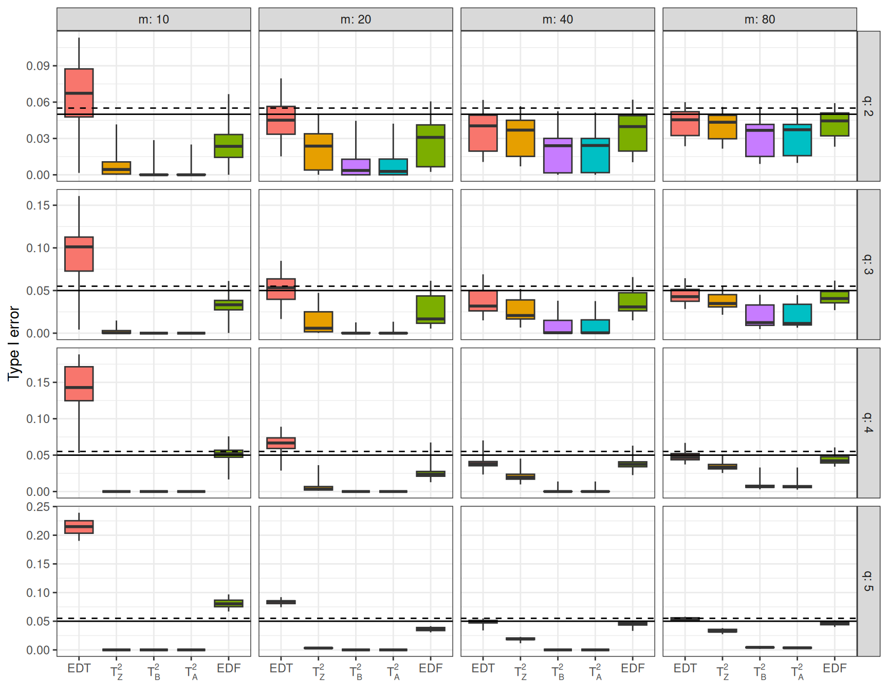
As in the previous example, Figure 12.6 uses small multiples to show variation in the results across two simulation factors (sample size \(m\) and hypothesis dimension \(q\)). The \(x\)-axis shows each of the five hypothesis testing procedures under comparison. The boxplots depict the distribution of the performance measure across the remaining factors in the design; Each box shows the range, inter-quartile range, and median of the Type-I error rates for a given test procedure across the various covariates tested and different degrees of model misspecification. For reference, we add a solid line at the target .05 rejection rate and a dashed line at the upper bound of a 90% confidence interval for an estimate with a true rejection rate of .05. The spread of the boxes shows how some methods are more or less vulnerable to different types of misspecification. Some estimators (e.g., \(T^2_A\)) are clearly hyper-conservative, with very low rejection rates. Other methods (e.g., EDF), have a range of very high rejection rates when \(m = 10\) but converge to the target level as the sample size incrases. For these tests, the degree of rejection rate depends on the degree of model mis-specification and the particular covariates tested (i.e., the remaining factors captured in the boxes).
12.2.5 Heat maps of coverage
For data with many levels of two different factors, one useful visualization technique is a heat map. For instance, Brown et al. (1977) studied methods of estimating the features of a binary (on/off) process occurring over time when that process is observed using momentary time sampling (MTS). MTS involves recording whether a process is on or off at specific moments that are evenly spaced over time. Under certain assumptions, the underlying process can be described by two parameters: prevalence, or the overall proportion of time that the process in on, and incidence, or the rate at which the process cycles between states. Brown et al. (1977) proposed maximum likelihood estimators (MLEs) for the prevalence and incidence parameters based on a sequence of MTS data.
Using simulation, Pustejovsky studied the performance of the maximum likelihood estimator and suggested an alternative of using penalized maximum likelihood and bootstrap confidence intervals. The simulation design involved varying three factors: prevalence, incidence, and the length of the MTS sequence. Because the prevalence parameter can take any value between 0 and 1 and the incidence parameter can take any positive value, we examined a large number of levels of each of these factors, with 10 levels for prevalence and 10 levels for incidence, plus 12 levels for sample size. We limited the levels of prevalence to run from 0.05 to 0.50 because the estimators work symmetrically for prevalence values above and below 0.50.
Figure 12.7 shows the coverage of parametric bootstrap confidence intervals for the prevalence parameter. The plot shows the combinations of prevalence and incidence as a grid for each sample size level. We break coverage into ranges of interest, with green being “good” (near 95%), yellow being “close” (92.5% or above), blue and purple being conservative (above 95%) coverage, and red being poor (below 92.5%). For this kind of plotting to work effectively, we need the MCSE to be small enough that the structure of the coverage levels are apparent. The figure consists of two panels, with the left panel showing results for smaller sample sizes and the right panel showing results for the larger sample sizes. We wrap the small multiples by sample size, so that the overall figure design runs from smallest sample size on the upper left to largest sample size on the lower right. Wrappings can be useful if you have many levels of a single factor, although it does not take advantage of the two-dimensional layout of the grid (such as we saw with examples Section 12.2.3 and Section 12.2.4). Within each panel, results for the original MLE and the penalized MLE are arranged size-by-side to facilitate comparison between methods.
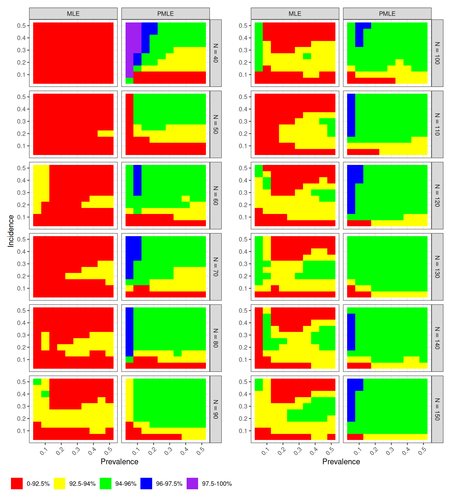
Looking across sample sizes in Figure 12.7, we see clear trends, where the coverage of both estimators degrades for low incidence rates. The field of green in the right column of each panel indicates that the penalized MLE works well across a large part of the parameter space. The left columns of each panel have less green, indicating that the original MLE has worse coverage Comparing left and right, the improvement of the penalized MLE over the original MLE is evident.
12.2.6 Head-to-head comparison of accuracy
Comparing the performance of different estimation methods is often a central focus of simulation studies, and so it is often important to construct figures to facilitate such comparisons. In Examples Section 12.2.1, Section 12.2.4, and Section 12.2.5, we saw figures designed to allow side-by-side comparisons of different estimators. A drawback of the figures presented in Examples Section 12.2.1 and Section 12.2.4 is that they aggregate the results over multiple scenarios, which makes it difficult to know whether one estimator out-performs always outperforms another or if it is worse under some conditions but better under others. For instance, in Figure 12.6, does the \(T_Z^2\) test always have lower Type I error than the EDF test? Or are there conditions where EDF is more conservative? There is no way to tell from the results presented because the box-plots are summarizing over multiple scenarios.
Several other plotting techniques can be useful for presenting head-to-head comparisons of performance. To illustrate these, we use data from Chen and Pustejovsky (2025), who studied the performance of a variety of estimators for average effect size in meta-analyses involving dependent effect sizes and selective reporting bias. Each estimator examined had two versions, involving either a univariate working model (where all effect sizes were treated as independent) or a multivariate working model (that treats effect sizes drawn from the same study as correlated). Thus, one of several questions of interest in this simulation was about the degree to which using a multivariate working model led to improved accuracy of an estimator.
Figure 12.8 is adapted from Figure 5b of Chen and Pustejovsky (2025) and depicts a subset of the results from our full simulation, focusing on the RMSE of the univariate and multivariate versions of the estimators. Each panel corresponds to a separate estimator. Within a panel, the horizontal and vertical axes correspond to the RMSE of the univariate and multivariate estimator, respectively. Each point represents the performance of the estimators under a single simulation scenario; the color of the point corresponds to the selection weight used to generate the data. A dashed line at \(y = x\) indicates the point where both versions have equal accuracy.
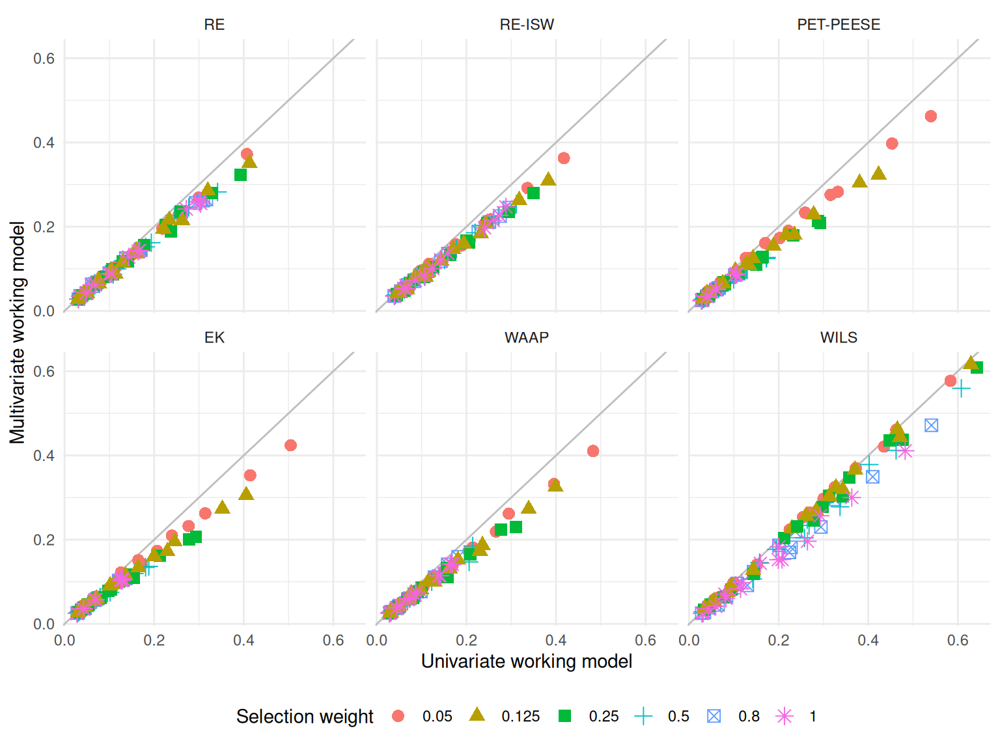
The head-to-head layout of Figure 12.8 makes it easy to see that the multivariate versions of each estimator tend to have slightly lower RMSE than their univariate counterparts and that this is true not only on average, but also across the conditions depicted in the figure. Furthermore, the performance advantage of the multivariate estimators seems to be approximately multiplicative: using the multivariate version instead of the univariate version reduces RMSE by close to a constant percentage. However, the figure is still limited to a subset of conditions because depicting every sample size and every setting for \(\bar\rho\) would make it too noisy to see these trends. A further drawback of this layout is that it is difficult to see the relationship for scenarios where both versions of an estimator have relatively low RMSE; instead, the eye tends to be drawn to outliers (such as the red dots with the highest values of RMSE).
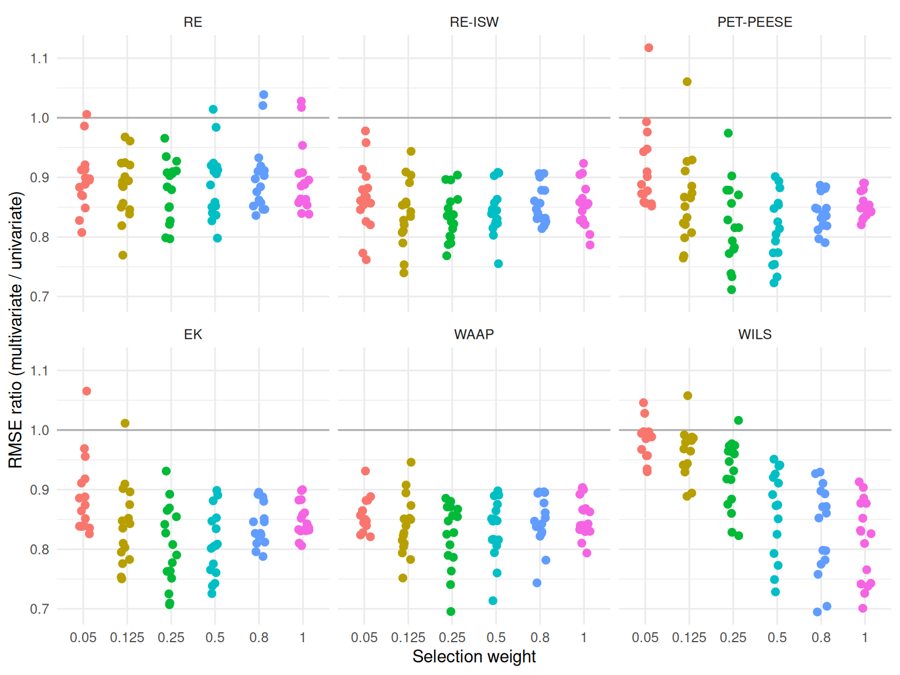
Figure 12.9 illustrates another way to depict head-to-head comparisons of the accuracy of two estimators. Rather than plotting one versus the other, we have calculated and plotted the ratio of the RMSE for the multivariate estimator relative to the RMSE of the univariate version. Thus, RMSE ratios less than one correspond to scenarios where the multivariate version is more accurate. Each point still corresponds to a unique scenario, and the number of points in each panel is identical to the number in Figure 12.8. This representation makes it much easier to see how relative accuracy is affected by the selection weight; for instance, the advantage of the multivariate versions of the PET/PEESE, EK, and WILS estimators tend to weaken for smaller selection weights. Further, plotting at the RMSE ratio has freed up one dimension of the graph, which could allow us to represent one further dimension of the simulation design in the figure.3 The main drawback of plotting the ratio is that the figure does not provide information about the absolute magnitude of the RMSE.
12.3 Modeling
Simulations are designed experiments, often with a full factorial structure. The results are datasets in their own right, just as if we had collected data in the wild. We can therefore leverage classical techniques for analyzing full factorial experiments. For example, regressing a performance measure against our factor levels provides a quantitative description of how the different levels influence performance, holding the other factors constant. This type of regression has been described as a “meta-regression” (Kleijnen 1981; Friedman and Pressman 1988; Gilbert and Miratrix 2024) because it involves a regression model where the response variable is itself a summary estimate of some performance measure.4 The technique also has ties to meta-analysis (see, e.g., Borenstein et al. 2021), which involves summarizing and examining trends across sets of empirical findings from different studies.
One useful summary of a meta-regression model is an analysis of variance (ANOVA) table that decomposes the variation in the performance measure into different sources. In the language of a full factorial experiment, the ANOVA table typically includes both “main effects” and “interaction effects.” Main effects characterize the extent to which a particular factor systematically influences performance, when averaging across all other factors in the design. By aggregating over other factors, main effects will capture the broadest possible patterns; if we see a trend when we average over all the other varying factors, then we can infer that the finding is relevant across the many different simulation contexts explored, rather than being an idiosyncratic feature of a specific and narrow context. Interaction effects characterize the degree to which patterns or trends observed in one factor are themselves variable, changing depending on the level of another factor. Interactions provide an indication of how the influence of a particular factor might matter more or less, depending on other aspects of the context.
In simulations that involve comparing multiple methods, we might approach meta-regression models in one of two ways. One possibility would be to include the method itself as a factor in the meta-regression. With this approach, the estimated main effect for each method will describe the extent to which a method is higher or lower than the baseline method, on average across all the simulation scenarios. The main effects of the simulation factors will tell us the extent to which each factor influences the performance measure on average across all the methods considered. For instance, we might expect that the true standard error goes down as sample size increases, following a consistent pattern across all methods. With this approach, we would need to examine interactions between method and the other factors, to see how the methods vary in the extent to which they are influenced by the simulation scenario.
Another approach would be to use separate meta-regression models for each of the multiple methods. This approach makes it somewhat easier to understand the influence of the simulation design factors on the performance of each method. Using separate meta-regressions, we might find that a certain factor has a very strong influence on the bias and RMSE of one particular method, whereas it has little or no influence on the performance of a different method. The challenge with this approach is that it becomes more difficult to identify patterns that hold across all methods or to draw comparisons across different methods.
12.3.1 Comparing methods for cross-classified data
Lee and Pustejovsky (2023) were interested in evaluating how different modeling approaches perform when analyzing cross-classified data structures in which students were nested both in schools and in neighborhoods. To do this, we conducted a multi-factor simulation to compare three methods: a cross-classified random effects model (CCREM), a simple, ordinary least squares model with two-way cluster-robust variance estimation (CRVE), and a two-way fixed effects model, also with CRVE. The simulation was complex, involving several factors including the magnitude of effect \((r)\), the number of schools \((H)\), the number of students per school \((J)\), a school-level intra-unit correlation coefficient (IUCC), and whether the data-generating process involved violations of certain assumptions of the CCREM.
To understand which factors had the most influence on the bias of the three methods, we used an ANOVA model. We were interested in understanding the factors that influenced bias both when all assumptions of the CCREM held and when each of several assumptions was violated. We therefore computed four separate ANOVA summaries—one for each scenario where all assumptions were met, where homoskedasticity was violated, where exogeneity was violated, and where there were unmodeled random slopes. This approach let us understand which of the remaining factors were important influences on the parameter bias of the methods examined.
The supplementary materials of Lee and Pustejovsky (2023) (Table S5.2, available at https://osf.io/hy73g and reproduced as Table 12.2) reported the results of these four ANOVA models, with columns corresponding to each of the four assumption scenarios and rows corresponding to factors manipulated within that context. The magnitude of the effects is expressed as partial \(\eta^2\) effect sizes; Small, medium, and large effects are marked to make them jump out to the eye.
| Source | Assumptions Met | Homoskedasticity Violated | Exogeneity Violated | Random Slopes |
|---|---|---|---|---|
| Method | 0.000 | 0.006 | 0.995 L | 0.000 |
| Effect Size (r) | 0.131 M | 0.008 | 0.020 S | 0.142 L |
| Number of Schools (H) | 0.014 S | 0.113 M | 0.188 L | 0.001 |
| Students per School (J) | 0.016 S | 0.016 S | 0.747 L | 0.110 M |
| IUCC | 0.007 | 0.007 | 0.033 S | 0.073 M |
| method × r | 0.006 | 0.006 | 0.007 | 0.012 S |
| method × H | 0.004 | 0.002 | 0.157 L | 0.000 |
| method × J | 0.002 | 0.000 | 0.878 L | 0.010 |
| method × IUCC | 0.012 S | 0.003 | 0.037 S | 0.000 |
| r × H | 0.103 M | 0.010 | 0.059 S | 0.377 L |
| r × J | 0.006 | 0.024 S | 0.008 | 0.051 S |
| r × IUCC | 0.065 M | 0.025 S | 0.084 M | 0.136 M |
| H × J | 0.002 | 0.014 S | 0.062 M | 0.105 M |
| H × IUCC | 0.024 S | 0.008 | 0.034 S | 0.137 M |
| J × IUCC | 0.004 | 0.088 M | 0.013 S | 0.029 S |
Note: (S)mall = .01, (M)edium = .06, (L)arge = .14
In the second column of Table 12.2, we see that when model assumptions are met or only homoscedasticity is violated, the choice of method (CCREM, OLS-CRVE, FE-CRVE) has almost no impact on parameter bias (\(\eta^2 = 0.000\) to 0.006). However, under an exogeneity violation, method choice has a large effect (\(\eta^2 = 0.995\)), indicating that some methods (e.g., OLS-CRVE) have much more bias than others. Other factors such as the effect size of the parameter and the number of schools can also show moderate-to-large impacts on bias in several conditions. Table 12.2 also shows how an interaction between simulation factors can matter. For example, interactions between method and number of schools, or students per school, can really impact bias under the Exogeniety Violated condition; this means the different methods respond differently as sample size changes. Overall, the ANOVA exercise was a useful preliminary step in our analysis because it provided a succinct summary of how some aspects of the simulation’s design matter more and some matter less. We used the results to inform the design of visualizations for illustrating key findings from the simulation.
12.3.2 Biserial correlations, revisited
In the biserial correlation example described in Section 12.2.3, we saw that bias can change notably across scenarios considered, and that several factors appear to be driving these changes. These factors also seem to have complex interactions: note how when p1 = 0.5, we get larger dips than when p1 = 1/8. Figure 12.5 gives a sense of the complex combination of factors that influence bias and also suggests some possibilities for further analysis. In particular, the figure suggests that the bias grows smaller as the sample size increases. We used this observation to develop a model in which the bias is inversely proportional to the sample size, as in \[ B_{pqrs} = \beta_{pqr} \times \frac{1}{N_s} + e_{pqrs}, \] where \(B_{pqrs}\) is the estimated bias for cut-off level \(p\), cut-off type \(q\), true correlation level \(r\), and sample size level \(s\), \(N_s\) is the actual value of sample size level \(s\), and \(e_{pqrs}\) is an error capturing the Monte Carlo uncertainty in the bias estimate.
Because the model reduces the dimension of the simulation’s design, relying on it allow us to simplify further analysis and presentation of the simulation results. For instance, we used the model to motivate construction of Figure 12.10, which shows how \(\beta_{pqr}\) varies for different cut-off values, cut-off types, and correlation parameters. The results presented are aggregated across the sample size factor because we have fully accounted for how it affects bias.
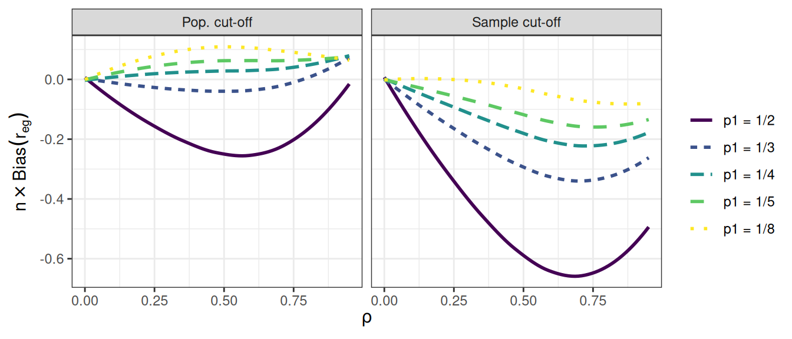
12.4 Reporting
Just as with empirical data analysis, the analysis that you present in an outward-facing report will usually be only a summary of all of the analysis that you conduct to arrive at your findings. Typically, you will need to make many figures and tables, and potentially explore several different modeling techniques in order to identify the important patterns in a set of simulation results. You need to work through such analysis in order to develop a strong understanding of what is going on in a set of simulation results. You will then need to clarify the story by distilling your full analysis into a selection of figures, tables, and summaries that explain your findings while maintaining honesty and transparency. Some of the remainder will then become supplementary materials that contain further detail to both enrich your main narrative and demonstrate that you are not hiding anything.
When presenting results, it is important to not pummel readers with a deluge of tables, figures, and observations. Instead, strive to present summaries of results that clearly illustrate the main findings from the study—that is, the patterns and trends that most directly respond to the research questions—and also draw attention to any results that are unusual or anomalous. Often, an audience will be best served with a few well-chosen figures. In the text of a write-up, you might also include a few specific numerical comparisons. Do not include too many of these, and be sure that it is clear why the numerical comparisons you include are important.
Findings from a simulation study are by definition a simplified summary of a complex phenomenon. Alert readers will know this and will be cautiously attuned to (or outright skeptical about) details not represented in the final set of exhibits. To support transparency, you should also provide code for reproducing the entire simulation, along with data files containing the full detail of your simulation results. Sharing code allows any interested reader to rerun the simulation and conduct your analysis themselves or to rerun your simulation under different conditions. Sharing a data file of simulation results allows readers to verify or further probe the patterns that you identify in your write-up, to visualize or analyze results in novel ways, or to examine subsets of conditions that might be of particular interest.
To represent all four performance measures, we could create a separate plot of \(R^2\) and add it to the right-hand side of Figure 12.3. The
patchworkpackage (Pedersen 2024) provides tools for creating composite plots such as this.↩︎In a discussion about the importance of simulation, Little (2013) provides several further examples of this type of plot, including figures showing an RMSE and confidence interval coverage for four estimators of a regression coefficient when using a calibration procedure. Antonakis et al. (2021) uses similar plots to report results from a simulation examining what happens when random effect assumptions are ignored in multilevel modeling.↩︎
Figure 12.9 uses color to represent different levels of the selection weight parameter, even though this is redundant with the horizontal axis of each panel. We have used this redundant mapping to emphasize the parallels with Figure 12.8, even though it is not strictly necessary. We could instead add further results to the figure by using color to represent different levels of the \(\bar\rho\) parameter.↩︎
Meta-regression can also be used to account for Monte Carlo uncertainty in some contexts, which can be especially important when the number of iterations per scenario is low. Gilbert and Miratrix (2024) examine this point in greater detail.↩︎